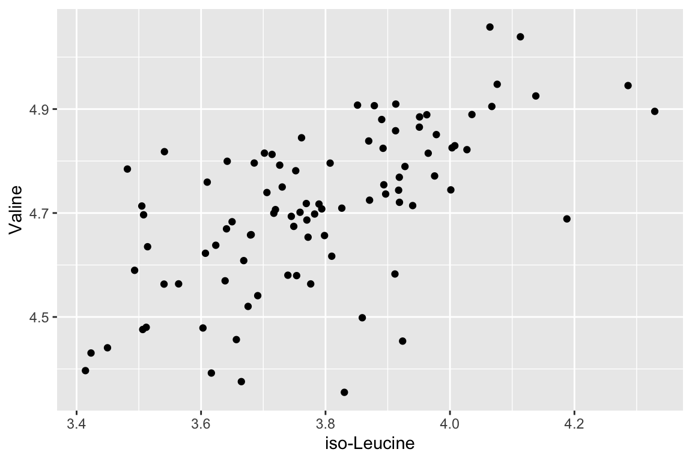
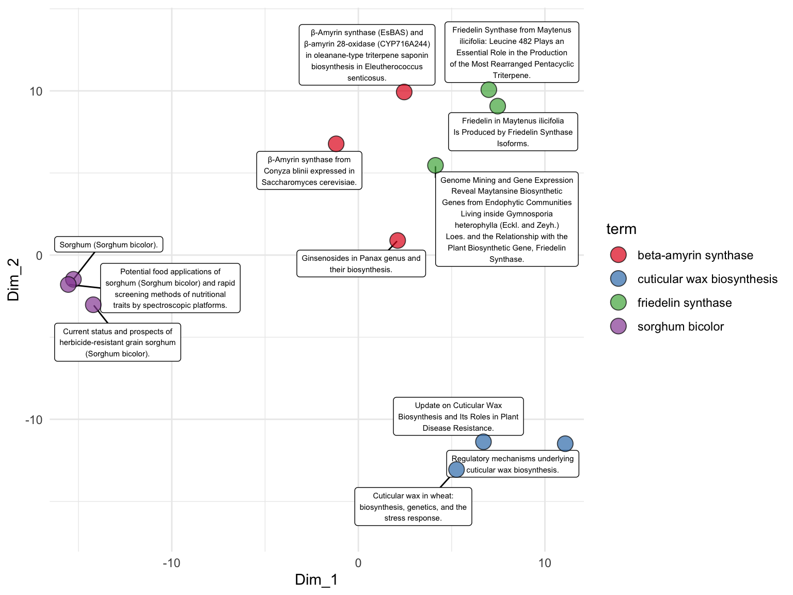
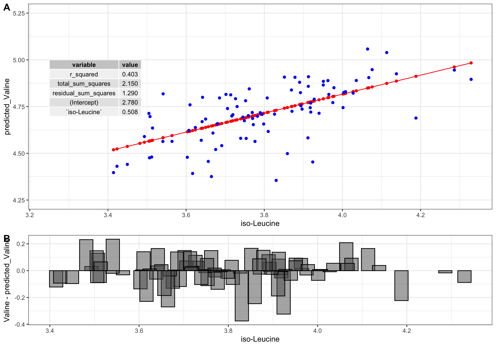
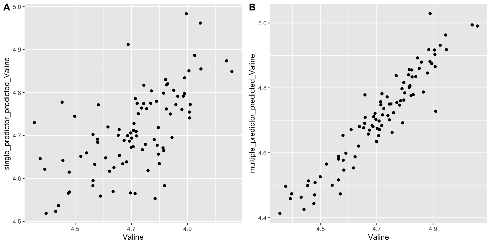
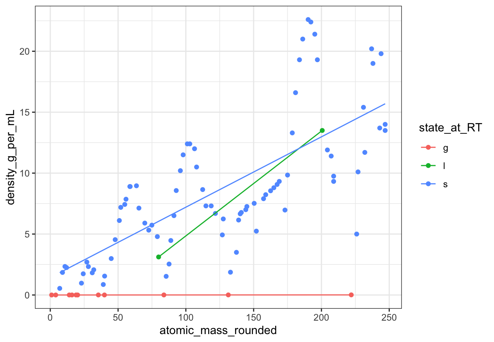

regression models

Does one measurement rise or fall with another, and by how much? Which of several predictors matters most, and does the response rise at the same rate in every group? What value should we expect for a sample whose response was never measured? Regression models answer both kinds of question, those about relationships and those about prediction. Both run through analytical chemistry, from the calibration curve that turns a detector signal into a concentration to studies asking which metabolites track a disease. This chapter fits straight-line models with one predictor and with several, reads what they say about the data, compares slopes between groups, uses a fitted line to predict values for new samples, and checks whether a model can be trusted. The machine learning models chapter builds on the same steps with more flexible models.
One-page summary (PDF) Jump to the chapter summary

Choosing what to do with a regression model. This decision flowchart starts from what the model is for and ends at the steps for reading, ranking, comparing slopes between groups, or predicting with it, all of which finish with check_model(). Yellow boxes are questions about the analysis and green boxes are recommended steps.
model use
A numerical model has two main uses: inferential and predictive.
Inferential uses aim to understand and quantify the relationships between variables, focusing on the significance, direction, and strength of these relationships to draw conclusions about the data. When using inferential models we care a lot about the exact inner workings of the model because those inner workings are how we understand relationships between variables.
Predictive uses are designed with the primary goal of forecasting future outcomes or behaviors based on historical data. When using predictive models we often care much less about the exact inner workings of the model and instead care about accuracy. In other words, it matters less how the model works as long as it is accurate.
The straight-line models in this chapter serve both purposes at once: their inner workings are simple enough to read directly, and they can also be used to predict. More flexible models, whose inner workings are harder to read and which are judged mainly on their predictive accuracy, are the subject of the machine learning chapter.
In this course, we will build models using a function called buildModel(). To use it, we give it our data and tell it which sets of values we want to relate. To do that, we need to specify (at least) two things:
predictors: the variables the model uses to make its prediction. They are the variables that go on the right of a formula and, in a plot, on the x axis (a second predictor is usually shown with color or facets). Depending on the model, these could be continuous or categorical variables.response: the variable that the model should predict. It is the variable that goes on the left of a formula and on the y axis of a plot. Depending on the model, it could be a continuous value (regression) or a category/class (classification).
For model building, we also need to handle missing data. buildModel() stops if the data contain any missing values, so one way forward is to impute them, which means filling in each missing value with something. There are many ways to do this; here we use the median value of each column, with the impute() function from the Hmisc package:
single linear regression
We will start with some of the simplest models: linear models. There are a variety of ways to build linear models in R, but we will use buildModel(), as mentioned above. First, we will use least squares regression to model the relationship between predictor and response variables. Suppose we want to know if the abundances of iso-Leucine and Valine are related in our metabolomics dataset:
ggplot(metabolomics_data) +
geom_point(aes(x = `iso-Leucine`, y = Valine))
Valine and iso-leucine abundance in patient blood samples. Scatter plot with iso-leucine abundance on the horizontal axis and valine abundance on the vertical axis; the points rise from left to right. Each point is one patient. Data: metabolomics_data.
It looks like there might be a relationship! Let’s build a linear regression model and use it inferentially to examine the details of that relationship:
basic_regression_model <- buildModel(
data = metabolomics_data,
model_type = "linear_regression",
predictors = "iso-Leucine",
response = "Valine"
)
names(basic_regression_model)
## [1] "model_type" "response" "predictors" "model"
## [5] "metrics"The output of buildModel() holds the model_type, the names of the response and the predictors, the model itself, and the metrics describing the model and its performance. Let’s look at the model:
basic_regression_model$model
##
## Call:
## lm(formula = formula, data = data, model = TRUE, x = TRUE, y = TRUE,
## qr = TRUE)
##
## Coefficients:
## (Intercept) `iso-Leucine`
## 2.784 0.508This is a linear model stored inside a special object type inside R called an lm. These objects can be a bit tricky to work with, but the metrics table makes the important parts easy to reach. Let’s look at the metrics:
basic_regression_model$metrics
## variable value std_err type
## 1 r_squared 0.4033510 NA statistic
## 2 total_sum_squares 2.1544636 NA statistic
## 3 residual_sum_squares 1.2854585 NA statistic
## 4 (Intercept) 2.7843338 0.24587912 coefficient
## 5 `iso-Leucine` 0.5080279 0.06477162 coefficient
## p_value p_value_adj
## 1 NA NA
## 2 NA NA
## 3 NA NA
## 4 4.566690e-19 9.133381e-19
## 5 8.071183e-12 8.071183e-12It shows us the r-squared, the total and residual sum of squares, the intercept (b in y = mx + b), and the coefficient for iso-Leucine (i.e. the slope, m), as well as some other things (we will talk about them in a second). The type column separates the two kinds of row, so filter() pulls out just the coefficients:
basic_regression_model$metrics %>%
filter(type == "coefficient")
## variable value std_err type
## 1 (Intercept) 2.7843338 0.24587912 coefficient
## 2 `iso-Leucine` 0.5080279 0.06477162 coefficient
## p_value p_value_adj
## 1 4.566690e-19 9.133381e-19
## 2 8.071183e-12 8.071183e-12Note that a variable whose name contains a space or a hyphen, like iso-Leucine, is listed in the variable column with backticks around it (`iso-Leucine`), so filtering on type is the more reliable way to find a coefficient. The slope here says that for every one-unit increase in iso-Leucine abundance, the model expects Valine abundance to rise by about 0.51.

Using a model to make predictions. A fitted model takes values of the predictor variable and returns the value of the response variable that the model expects for each one.
We can also use a function called predictWithModel() to make predictions using the model. We give it the data we want predictions for and the model. Here we predict a Valine abundance for every patient in the data set, from their iso-Leucine abundance:
predictions_from_basic_linear_model <- predictWithModel(
data = metabolomics_data,
model = basic_regression_model
)
predictions_from_basic_linear_model %>%
select(`iso-Leucine`, Valine, predicted_Valine) %>%
head()
## # A tibble: 6 × 3
## `iso-Leucine` Valine predicted_Valine
## <dbl> <dbl> <dbl>
## 1 3.60 4.48 4.61
## 2 3.97 4.82 4.80
## 3 4.29 4.95 4.96
## 4 3.92 4.72 4.78
## 5 3.69 4.54 4.66
## 6 3.75 4.67 4.69predictWithModel() returns the data we gave it with one new column holding the predictions. The column is named after the model’s response variable, so here it is predicted_Valine. Because we have the measured Valine values in our data set, we can compare the predicted values to the measured values to see how well our model is doing:
ggplot(predictions_from_basic_linear_model) +
geom_line(aes(x = `iso-Leucine`, y = predicted_Valine), color = "red") +
geom_point(aes(x = `iso-Leucine`, y = predicted_Valine), color = "red") +
geom_point(aes(x = `iso-Leucine`, y = Valine), color = "blue")
Measured and predicted valine abundance. Scatter plot with iso-leucine abundance on the horizontal axis and valine abundance on the vertical axis; blue points are measured values and the red line and points are the values predicted by a linear model of valine on iso-leucine. Each blue point is one patient. Data: metabolomics_data.
Now let’s talk about evaluating the quality of our model. For this we need some means of assessing how well our line fits our data. We will use residuals: the distance between each of our points and our line.
ggplot(predictions_from_basic_linear_model) +
geom_point(aes(x = `iso-Leucine`, y = Valine)) +
geom_line(aes(x = `iso-Leucine`, y = predicted_Valine)) +
geom_segment(aes(x = `iso-Leucine`, y = Valine, xend = `iso-Leucine`, yend = predicted_Valine))
Residuals of the linear model of valine on iso-leucine. Scatter plot of measured valine against iso-leucine abundance with the model’s line; each vertical segment joins a measured value to the model’s prediction for it, so its length is that patient’s residual. Data: metabolomics_data.
We can calculate the sum of the squared residuals:
sum((predictions_from_basic_linear_model$Valine - predictions_from_basic_linear_model$predicted_Valine)^2)
## [1] 1.285459Let’s call that the “residual sum of the squares”. It is the noise: the spread the model leaves unexplained. Does that mean our model is good? On its own, the number cannot tell us; it has to be compared to something. Let’s compare it to a super simple model that is just defined by the mean of the response in the data.
ggplot(metabolomics_data) +
geom_point(aes(x = `iso-Leucine`, y = Valine)) +
geom_hline(aes(yintercept = mean(Valine)))
A mean-only model of valine abundance. Scatter plot of valine against iso-leucine abundance with a horizontal line at the mean valine abundance, the prediction of a model that ignores iso-leucine. Each point is one patient. Data: metabolomics_data.
The flat line ignores iso-Leucine, so it misses the rise in Valine that the points show. How much better is our linear model than the flat line model? Let’s measure the distance between each point and the flat line:
ggplot(metabolomics_data) +
geom_point(aes(x = `iso-Leucine`, y = Valine)) +
geom_hline(aes(yintercept = mean(Valine))) +
geom_segment(aes(x = `iso-Leucine`, y = Valine, xend = `iso-Leucine`, yend = mean(Valine)))
Residuals of the mean-only model of valine abundance. Scatter plot of valine against iso-leucine abundance with a horizontal line at the mean valine abundance; each vertical segment joins a measured value to the mean. Each point is one patient. Data: metabolomics_data.
Let’s call that the “total sum of the squares”, and now we can compare it to our “residual sum of the squares”:
residual_sum_of_squares <- sum(
(predictions_from_basic_linear_model$Valine - predictions_from_basic_linear_model$predicted_Valine)^2
)
total_sum_of_squares <- sum(
(metabolomics_data$Valine - mean(metabolomics_data$Valine))^2
)
1 - (residual_sum_of_squares / total_sum_of_squares)
## [1] 0.403351That is our R squared value. It is equal to 1 minus the ratio of the “residual sum of the squares” to the “total sum of the squares”. The R squared value can be thought of as:
- The share of the variation in the response explained by the predictor, with the noise holding the rest (the analysis of variance chapter splits that share among several predictors).
- How much better the line of best fit describes the data than the flat line.
Now, let’s put it all together and make it pretty:
top <- ggplot(predictions_from_basic_linear_model) +
geom_line(aes(x = `iso-Leucine`, y = predicted_Valine), color = "red") +
geom_point(aes(x = `iso-Leucine`, y = predicted_Valine), color = "red") +
geom_point(aes(x = `iso-Leucine`, y = Valine), color = "blue") +
annotate(geom = "table",
x = 3.25,
y = 5,
label = list(mutate(select(basic_regression_model$metrics, variable, value), value = signif(value, 3)))
) +
coord_cartesian(ylim = c(4.25,5.25)) +
theme_bw()
bottom <- ggplot(predictions_from_basic_linear_model) +
geom_col(
aes(x = `iso-Leucine`, y = Valine - predicted_Valine),
width = 0.03, color = "black", position = "dodge", alpha = 0.5
) +
theme_bw()
cowplot::plot_grid(top, bottom, ncol = 1, labels = "AUTO", rel_heights = c(2,1))
A linear model of valine abundance on iso-leucine abundance. (A) Scatter plot of measured valine (blue points) and model predictions (red line and points) against iso-leucine abundance, with the model’s metrics in an inset table. (B) Bar plot of the residual (measured minus predicted valine) for each patient against iso-leucine abundance. Each point or bar is one patient. Data: metabolomics_data.
predicting with a model
A fitted model is not tied to the data it was built from. It can predict the response for any table that has the same predictor columns, including samples whose response was never measured. That is the predictive use of a model, and it is often the reason for building one.
metabolomics_unknown holds measurements from seven new patients. It has every metabolite column that metabolomics_data has, so our iso-Leucine model can predict a Valine abundance for each of them. The table has no column identifying the patients, though, so first we number the rows. Because predictWithModel() returns the whole table with the prediction added to each row, every prediction stays attached to the patient it belongs to:
unknown_patients <- metabolomics_unknown %>%
mutate(patient = row_number())
unknown_predictions <- predictWithModel(
data = unknown_patients,
model = basic_regression_model
)
unknown_predictions %>%
select(patient, `iso-Leucine`, predicted_Valine)
## # A tibble: 7 × 3
## patient `iso-Leucine` predicted_Valine
## <int> <dbl> <dbl>
## 1 1 3.71 4.67
## 2 2 3.74 4.69
## 3 3 3.50 4.56
## 4 4 3.63 4.63
## 5 5 3.87 4.75
## 6 6 3.67 4.65
## 7 7 3.56 4.59The output is an ordinary table, so the verbs from the wrangling chapter work on it. We can read off the prediction for a single patient:
unknown_predictions %>%
filter(patient == 3)
## # A tibble: 1 × 126
## Pyruvate MethylSuccinate `Phosphoglyceric Acid`
## <dbl> <dbl> <dbl>
## 1 13.8 15.7 13.4
## # ℹ 123 more variables: `Glucose 1-phosphate` <dbl>,
## # `Malonic Acid` <dbl>, `Fumaric Acid` <dbl>,
## # `Alpha-Ketoglutaric Acid` <dbl>, Sarcosine <dbl>,
## # Cadaverine <dbl>, `5-Aminovaleric Acid` <dbl>,
## # Pipecolate <dbl>, Tyramine <dbl>,
## # `1-Methylhistidine` <dbl>, `isoValeric Acid` <dbl>,
## # `2-Hydroxyisovaleric Acid` <dbl>, …Or sort the patients by their predicted value, or keep only those predicted to be above some level:
unknown_predictions %>%
arrange(desc(predicted_Valine))
## # A tibble: 7 × 126
## Pyruvate MethylSuccinate `Phosphoglyceric Acid`
## <dbl> <dbl> <dbl>
## 1 14.2 15.4 12.9
## 2 13.7 15.4 13.1
## 3 13.8 15.7 12.7
## 4 14.1 15.4 13.4
## 5 13.6 16.0 14.0
## 6 13.7 15.8 13.1
## 7 13.8 15.7 13.4
## # ℹ 123 more variables: `Glucose 1-phosphate` <dbl>,
## # `Malonic Acid` <dbl>, `Fumaric Acid` <dbl>,
## # `Alpha-Ketoglutaric Acid` <dbl>, Sarcosine <dbl>,
## # Cadaverine <dbl>, `5-Aminovaleric Acid` <dbl>,
## # Pipecolate <dbl>, Tyramine <dbl>,
## # `1-Methylhistidine` <dbl>, `isoValeric Acid` <dbl>,
## # `2-Hydroxyisovaleric Acid` <dbl>, …
unknown_predictions %>%
filter(predicted_Valine > 4.66)
## # A tibble: 3 × 126
## Pyruvate MethylSuccinate `Phosphoglyceric Acid`
## <dbl> <dbl> <dbl>
## 1 13.8 15.7 12.7
## 2 13.7 15.4 13.1
## 3 14.2 15.4 12.9
## # ℹ 123 more variables: `Glucose 1-phosphate` <dbl>,
## # `Malonic Acid` <dbl>, `Fumaric Acid` <dbl>,
## # `Alpha-Ketoglutaric Acid` <dbl>, Sarcosine <dbl>,
## # Cadaverine <dbl>, `5-Aminovaleric Acid` <dbl>,
## # Pipecolate <dbl>, Tyramine <dbl>,
## # `1-Methylhistidine` <dbl>, `isoValeric Acid` <dbl>,
## # `2-Hydroxyisovaleric Acid` <dbl>, …A prediction is only as good as the model behind it. This model explains about 40% of the variation in Valine (its r-squared is 0.40), so these predictions are rough. Using more of what was measured is the next step.
multiple linear regression
Now let’s try a multiple linear regression model. This is the same as a simple linear regression model, but with more than one predictor. (Other texts call the predictors independent or explanatory variables, and the response the dependent variable.) Simple linear regression uses one predictor to predict the value of the response, using a linear equation of the form y = mx + b. Multiple linear regression extends this concept to include two or more predictors, with a typical form of y = m1x1 + m2x2 + … + b. While simple linear regression describes a straight-line relationship between one predictor and the response, multiple linear regression fits a multi-dimensional plane in the variable space, providing a more nuanced picture of how the predictors together influence the response. It can give more accurate predictions, though it also requires more careful consideration of assumptions and of correlations among the predictors themselves. Let’s try it with the first 30 metabolites in our data set:
multiple_predictor_regression_model <- buildModel(
data = metabolomics_data,
model_type = "linear_regression",
predictors = colnames(metabolomics_data)[3:32],
response = "Valine"
)
basic_regression_model$metrics %>% filter(type == "statistic")
## variable value std_err type p_value
## 1 r_squared 0.403351 NA statistic NA
## 2 total_sum_squares 2.154464 NA statistic NA
## 3 residual_sum_squares 1.285459 NA statistic NA
## p_value_adj
## 1 NA
## 2 NA
## 3 NA
multiple_predictor_regression_model$metrics %>% filter(type == "statistic")
## variable value std_err type p_value
## 1 r_squared 0.8941597 NA statistic NA
## 2 total_sum_squares 2.1544636 NA statistic NA
## 3 residual_sum_squares 0.2280290 NA statistic NA
## p_value_adj
## 1 NA
## 2 NA
## 3 NAThe 30-predictor model explains far more of the variation in Valine than the iso-Leucine model does (an r-squared of 0.89 against 0.40). Comparing each model’s predictions with the measured values shows the same thing:
model_comparison_data <- metabolomics_data %>%
mutate(
single_predictor_predicted_Valine = predictWithModel(
data = metabolomics_data,
model = basic_regression_model
)$predicted_Valine,
multiple_predictor_predicted_Valine = predictWithModel(
data = metabolomics_data,
model = multiple_predictor_regression_model
)$predicted_Valine
)
plot1 <- ggplot(model_comparison_data) +
geom_point(aes(x = Valine, y = single_predictor_predicted_Valine))
plot2 <- ggplot(model_comparison_data) +
geom_point(aes(x = Valine, y = multiple_predictor_predicted_Valine))
plot_grid(plot1, plot2, nrow = 1, labels = "AUTO")
Predicted against measured valine abundance for two linear models. (A) Predictions of the single-predictor model (iso-leucine only). (B) Predictions of the 30-predictor model. In each scatter plot measured valine abundance is on the horizontal axis and predicted valine abundance on the vertical axis; points on a diagonal line would be perfect predictions. Each point is one patient. Data: metabolomics_data.
concept check
Fill in the blank with the metric that measures how much of the variation in Valine a model explains, then press Run.
Self-check: what does the higher r-squared of the 30-predictor model tell us?
which predictors matter most
Once a model has several predictors, a natural question is which of them drives the prediction. The metrics table reports a coefficient, a standard error and a p-value for every predictor:
- Coefficient value: its magnitude and sign describe the expected change in the response when that predictor increases by one unit while all the other predictors are held constant.
-
p_value(orp_value_adj, adjusted for testing many predictors at once) is the p-value from testing whether that predictor’s coefficient is different from zero. Small p-values highlight predictors that are likely to matter after accounting for the rest.
It is tempting to rank the predictors by the size of their coefficients, but a coefficient is measured in the units of its own predictor, so raw coefficients cannot be compared with each other. Let’s see what goes wrong, with a model of Valine built from four metabolites:
four_predictor_model <- buildModel(
data = metabolomics_data,
model_type = "linear_regression",
predictors = c("Phenylalanine", "2-Aminoadipate", "Tryptophan", "Propionate"),
response = "Valine"
)
four_predictor_model$metrics %>%
filter(type == "coefficient", variable != "(Intercept)") %>%
arrange(desc(abs(value)))
## variable value std_err type
## 1 Phenylalanine 0.29172653 0.11152694 coefficient
## 2 Tryptophan 0.16871686 0.05478670 coefficient
## 3 `2-Aminoadipate` 0.15155542 0.03409275 coefficient
## 4 Propionate 0.05636311 0.03146305 coefficient
## p_value p_value_adj
## 1 1.047614e-02 0.0314284247
## 2 2.765831e-03 0.0110633260
## 3 2.548435e-05 0.0001274218
## 4 7.666589e-02 0.1533317727Phenylalanine has by far the largest coefficient. But Phenylalanine barely varies from patient to patient: its standard deviation is about 0.12, against about 0.4 for 2-Aminoadipate and Propionate. A one-unit change in Phenylalanine is therefore an enormous change, far bigger than anything seen in the data, so its coefficient is large simply because its unit is large.
The fix is to put every predictor on the same footing before fitting, by scaling each one to a mean of zero and a standard deviation of one (scaling is introduced in the distances and scaling chapter). buildModel() does this when given scale_variance = TRUE, the same argument runMatrixAnalysis() uses. It scales the numeric predictors only, never the response, so each coefficient then means “the change in the response for a one-standard-deviation change in this predictor”, which can be compared across predictors:
scaled_four_predictor_model <- buildModel(
data = metabolomics_data,
model_type = "linear_regression",
predictors = c("Phenylalanine", "2-Aminoadipate", "Tryptophan", "Propionate"),
response = "Valine",
scale_variance = TRUE
)
scaled_four_predictor_model$metrics %>%
filter(type == "coefficient", variable != "(Intercept)") %>%
arrange(desc(abs(value)))
## variable value std_err type
## 1 `2-Aminoadipate` 0.05963571 0.01341519 coefficient
## 2 Tryptophan 0.03906281 0.01268470 coefficient
## 3 Phenylalanine 0.03416658 0.01306187 coefficient
## 4 Propionate 0.02383590 0.01330569 coefficient
## p_value p_value_adj
## 1 2.548435e-05 0.0001019374
## 2 2.765831e-03 0.0082974945
## 3 1.047614e-02 0.0209522831
## 4 7.666589e-02 0.0766658864After scaling, 2-Aminoadipate has the largest coefficient and Phenylalanine drops to third. The scaled ranking also agrees with the p-values, where 2-Aminoadipate has the smallest. Three further points:
- The intercept is left out of the ranking with
variable != "(Intercept)". It is not a measurement but the model’s baseline (after scaling it is simply the mean Valine abundance), so it does not belong in a list of predictors. - In a linear model, scaling changes the units of the coefficients, not the fit. Both models have the same r-squared, and they make the same predictions for new patients:
four_predictor_model$metrics %>% filter(variable == "r_squared")
## variable value std_err type p_value p_value_adj
## 1 r_squared 0.5278067 NA statistic NA NA
scaled_four_predictor_model$metrics %>% filter(variable == "r_squared")
## variable value std_err type p_value p_value_adj
## 1 r_squared 0.5278067 NA statistic NA NA
predictWithModel(data = metabolomics_unknown, model = four_predictor_model)$predicted_Valine
## [1] 4.788360 4.740230 4.642298 4.793729 4.820495 4.648666
## [7] 4.617385
predictWithModel(data = metabolomics_unknown, model = scaled_four_predictor_model)$predicted_Valine
## [1] 4.788360 4.740230 4.642298 4.793729 4.820495 4.648666
## [7] 4.617385-
scale_varianceisFALSEby default, so coefficients come back in the units the predictors were measured in, the form needed when a slope is itself the answer (the change in signal per unit of concentration on a calibration curve, for example). Turn it on to compare which predictor matters most, and leave it off to read coefficients in real units. Either model can make predictions: a model built withscale_variance = TRUEstores the mean and standard deviation of each predictor in the data it was built on, andpredictWithModel()scales a new table with those same values, so the new table goes in as measured. (Scaling the columns by hand withmutate(across(c(...), scale))beforebuildModel()gives the same coefficients, but that model then needs every new table scaled with the original data’s means and standard deviations, a step that is easy to get wrong.)
comparing slopes between groups
The predictors so far have all been numbers. A model can also take a categorical predictor, a column that names a group, and that opens up a common question: does the response rise with a predictor at the same rate in every group? Consider the elements of the periodic table. Density increases with atomic mass, but an element that is a gas at room temperature is about a thousand times less dense than a solid of similar mass, so one line through all of the elements would describe none of them well.
To give each group its own line, we describe the model with a formula instead of predictors and response. A formula puts the response on the left of a ~ and the predictors on the right, the same way as in the comparing groups chapter. Joining two predictors with * gives each group its own intercept and its own slope, while joining them with + would give each group its own intercept but force every group to share one slope (parallel lines). Elements whose density or state is not recorded are filtered out first, because buildModel() stops on missing values:
elements <- periodic_table %>%
filter(!is.na(density_g_per_mL), !is.na(state_at_RT))
state_model <- buildModel(
data = elements,
model_type = "linear_regression",
formula = density_g_per_mL ~ atomic_mass_rounded * state_at_RT
)
state_model$metrics %>% filter(variable == "r_squared")
## variable value std_err type p_value p_value_adj
## 1 r_squared 0.6360092 NA statistic NA NA
predictWithModel(data = elements, model = state_model) %>%
ggplot(aes(x = atomic_mass_rounded, color = state_at_RT)) +
geom_point(aes(y = density_g_per_mL)) +
geom_line(aes(y = predicted_density_g_per_mL)) +
theme_bw()
Density rises with atomic mass for solids but barely at all for gases. Scatter plot with atomic mass on the horizontal axis and density in g/mL on the vertical axis; color shows each element’s state at room temperature (g, gas; l, liquid; s, solid), and each line is the fit for one state from a linear model with an atomic mass by state interaction. Each point is one element. Data: periodic_table.
Each state now has its own line. To ask which slopes differ from which, we pass the model to tukeyTest() and name the numeric predictor whose slope should be compared with slopes_of. The Tukey test compares the slopes of every pair of groups and corrects the p-values for the number of comparisons, much as the comparing groups chapter’s tests do for means. Piping the result into pGroups() gives each group a letter, as before, along with its slope (estimate) and that slope’s standard error:
state_model %>%
tukeyTest(slopes_of = "atomic_mass_rounded") %>%
pGroups()
## treatment group spaced_group estimate std_err
## g g a a 4.163966e-05 0.017065239
## l l ab ab 8.599834e-02 0.043044343
## s s b b 5.772680e-02 0.005833263The letters read exactly as they do for means: groups that share a letter do not have significantly different slopes. Solids gain about 0.058 g/mL of density for every extra unit of atomic mass, while the slope for gases is indistinguishable from zero on this scale, and the two do not share a letter. The liquids share a letter with both. Only two elements (bromine and mercury) are liquid at room temperature, and two points pin down a slope very loosely, as the large standard error shows, so the test cannot tell their slope apart from either of the others.
assessing regression models
There are three aspects of a regression model that we should check on, to make sure the model isn’t violating any assumptions that we make when declaring the model to be valid:
-
Residual-based assumptions. These checks are specifically about the behavior of residuals, which are the differences between observed values and model predictions. This group includes:
Linearity: examines if residuals show a random scatter around zero, indicating a linear relationship between the predictors and the response variable. Patterns or curves in this plot may indicate that the model does not adequately capture the true relationship, suggesting potential non-linearity.
Homoscedasticity (homogeneity of variance): looks at the spread of residuals to confirm that variance is consistent across fitted values. In other words, the spread of the residuals should be uniform regardless of the fitted values. To assess homoscedasticity, residuals are plotted against fitted values. A horizontal band of residuals indicates that the variance is consistent, supporting the homoscedasticity assumption. Conversely, patterns such as a funnel shape, where residuals spread out or contract as fitted values increase, suggest heteroscedasticity, indicating that the variance of errors changes with the level of the predictors.
Normality of residuals: assesses whether residuals follow a normal distribution, which matters for statistical inference in regression. To check this characteristic, a quantile-quantile (Q-Q) plot is used, where the residuals are plotted against a theoretical normal distribution. If the residuals are normally distributed, the points will align closely along a straight line. Significant deviations from this line indicate departures from normality, which may affect the reliability of statistical inferences drawn from the model.
-
Predictor relationships. This check pertains to relationships among the predictor variables themselves, rather than their relationship with the response variable. In this case:
- Collinearity: assesses multicollinearity, which occurs when predictors are highly correlated with each other. This can lead to inflated variances of regression coefficients, making it challenging to attribute effects to individual predictors. This check helps ensure that predictors are independent enough to provide clear, interpretable results for each variable’s influence on the response.
-
Model fit and influence. These checks look at the overall fit of the model and assess if specific data points have undue influence on the model’s results. This group includes:
Posterior predictive check: this checks if model predictions align well with observed data, indicating a good overall fit. While not directly a residual analysis, it’s a comprehensive check for how well the model captures data patterns.
Influential observations: identifies data points that might disproportionately affect the model. High-leverage points can distort model estimates, so it’s important to verify that no single observation is overly influential.
We can assess all of these using:
multiple_regression_model <- buildModel(
data = metabolomics_data,
model_type = "linear_regression",
predictors = colnames(metabolomics_data)[3:10],
response = "Valine"
)
check_model(multiple_regression_model$model)![Diagnostic checks for a linear model of valine abundance on eight metabolites. Panels produced by check_model(): a posterior predictive check comparing the distribution of observed and model-predicted valine; linearity and homogeneity of variance, each plotting residuals against fitted values; influential observations, plotting standardized residuals against leverage; collinearity, showing the variance inflation factor of each predictor; and normality of residuals as a quantile-quantile plot. Data: metabolomics_data.](index_files/figure-html/unnamed-chunk-547-1.png)
Diagnostic checks for a linear model of valine abundance on eight metabolites. Panels produced by check_model(): a posterior predictive check comparing the distribution of observed and model-predicted valine; linearity and homogeneity of variance, each plotting residuals against fitted values; influential observations, plotting standardized residuals against leverage; collinearity, showing the variance inflation factor of each predictor; and normality of residuals as a quantile-quantile plot. Data: metabolomics_data.
concept check
Fill in the blank with the part of the buildModel() output that holds the fitted model, then press Run. Drawing the six panels takes about ten seconds.
Self-check: in a plot of residuals against fitted values, the residuals form a funnel that widens to the right. Which assumption does that call into question?
chapter summary
Download this summary as a one-page PDF
Building a regression model starts with what it is for. An inferential use reads the coefficients, their p-values and r-squared to describe how the response relates to the predictors; a predictive use applies the model to a table whose response was never measured. Four decisions follow. How many predictors: more can explain more of the variation, as r-squared shows. Whether to scale: build with scale_variance = TRUE before ranking coefficients by size, and leave it off to read them in real units. The fit and the predictions are the same either way. Whether slopes differ between groups: join the predictor and the group with *, not + (one shared slope), then compare the slopes with tukeyTest(slopes_of = ). Whether to trust it: check the residuals, the predictors and any influential points with check_model().
| Function or step | What it is for | What we set or vary |
|---|---|---|
Hmisc::impute() |
filling in missing values, because buildModel() stops on any |
the fill value (here each column’s median) |
buildModel() |
fitting a model |
data, model_type = "linear_regression", predictors (one or more), response; or a formula, response ~ predictor * group
|
$model, $metrics
|
the fitted model, and a table of its r-squared, coefficients and p-values |
filter(type == "coefficient"), filter(type == "statistic"), filter(variable == "r_squared")
|
predictWithModel() |
predictions for any table with the same predictor columns, returned as that table with a new predicted_<response> column |
data, and model (the whole buildModel() output) |
buildModel(scale_variance = TRUE) |
giving the numeric predictors a mean of 0 and a standard deviation of 1 before comparing coefficients, with predictWithModel() scaling new data to match |
TRUE to rank predictors, FALSE (the default) for coefficients in real units |
arrange(desc(abs(value))) |
ranking coefficients by size | drop the intercept first with variable != "(Intercept)"
|
tukeyTest(slopes_of = ), pGroups()
|
which groups’ slopes differ in a model built with *; letters and each group’s slope |
slopes_of, the numeric predictor whose slope is compared |
check_model() |
diagnostic panels: posterior predictive check, linearity, equal variance, normal residuals, collinearity, influential points | given model$model
|
exercises


further reading
performance R package. Provides simple tools to evaluate statistical model quality, checking things like fit, overparameterization, and assumption violations across mixed-effects, Bayesian, and many other model types.
Understand ridge regression and hyperparameter selection. Explains why ridge regression stabilizes coefficients when predictors are correlated, shows how the penalty trades bias for variance, and demonstrates hyperparameter selection via cross-validation.
Ridge, Lasso, and Elastic Net Tutorial. Covers how elastic net blends ridge and lasso behavior to handle collinearity while allowing variable selection, with tuning tips and interpretability notes in an applied workflow.
Regularization Techniques. Frames PLSR and other regularization methods in the broader context of dimension reduction for predictive modeling, emphasizing latent components and when to prefer each approach.